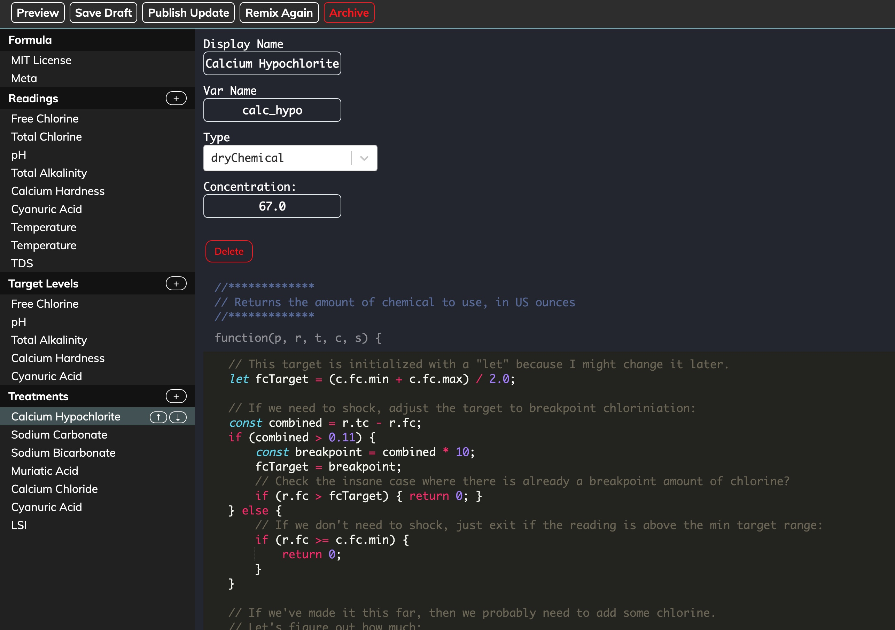
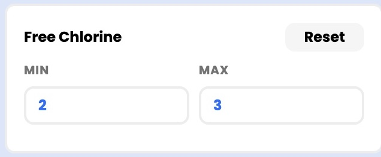
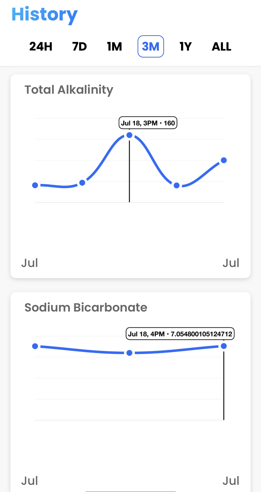

Creating Formulas
Overview
This is a framework to codify your poolcare workflow so that it can be used, inspected, and remixed by anybody.
Most of our users don't really understand what a formula is; they just load one in the iOS or Android app and follow the instructions to balance their pool.
Anyone can view & edit formulas using our online editor.

What problem does this solve?
Flexibility: Most pool calculators reflect the opinions (or worse: financial incentives) of their creators. If you want to use different chemicals, target-ranges, or sanitization systems... you should be able to. With Pooldash, this is accomplished by selecting a new formula, or by remixing an existing one to suit your needs.
Transparency: Most pool calculators don't reveal the code used to calculate chemical dosages. This makes it hard for the community to help improve the app. At Pooldash, we recognize that many of our users know more about poolcare than us, so we not only encourage them to read this code, but we let the community write it by remixing one another's formulas, which are all open-source under the MIT license.
Correctness: Most pool calculators have a 1-1 relationship between readings and treatments. This is easy to understand, but it breaks down quickly as special cases are implemented to account for side effects and chemical substitutions. Pooldash formulas approach this differently -- instead of looking at every reading and asking "How do we balance this reading?", we instead look at every possible treatment and ask "How much of this treatment should we use?" Each treatment has a custom javascript function that must answer this question.
We previously tried a different approach based on "ChemicalEffect" objects, but it was insufficient to model the nonlinear relationships and complex side-effects. Our current model of treatments-with-functions is closer to how poolcare operators actually think, and it encapsulates the complexity in a way that is approachable to programmers from various backgrounds.
How do they work?
Formulas have an arbitrary list of readings (Free Chlorine, pH, whatever) and a separate list of possible treatments (Calcium Hypochlorite, Sodium Bicarbonate, "Backwash the filter", whatever). Each treatment has a custom function that must return a single number. They run like so:
- The user takes all readings specified by the formula
- The app iterates over the formula's treatments, executing the custom javascript function for each one
- The app displays all of the treatments whose function returns a non-0 value
You can inspect formulas using the online editor here. If you want to make your own, you'll need to create a free account and remix an existing formula. They're all MIT-licensed, so you can fork whichever one(s) you want.
Below is a reference for all the properties of a formula. If you have suggestions for improvement, please post it in the forum. Similarly, if you think these docs could be improved, submit a pull-request on Github.
Properties
Readings
Each reading will appear as a slider in the user's app. Users can either use the slider to set the value, or they can type into a text-field instead. View an example here.
- The slider is limited by
Slider MinandSlider Max, but users can enter any number into the text-field. - If a reading is skipped, the default value is supplied to treatment functions via the
robject.- You should check the
sobject to check if a reading was skipped. - This reduces
undefinedexceptions and confusion related to0being falsey (and also a valid reading value).
- You should check the

To access the reading values in the treatment function, inspect the
robject. Reading entries will be keyed to the "Var Name" value. Assuming the reading pictured had "Var Name" set to "fc", this will assign a value of 1.4:
const readingValue = r.fc;
// readingValue is now the number 1.4
Skipped readings are unusual.
s.<var>will resolve to true for all skipped readings, but therobject will still contain the reading's default value.
const isReadingTaken = !!r.fc; // wrong
const isReadingTaken = !s.fc; // correct
| Property | Description |
|---|---|
| Display Name | This is the name users will see above the slider & next to the text-field. |
| Var Name | This will be the key used on the r object that treatment-functions use to get the value of this reading. |
| Default Value | The first time somebody uses this formula, this will be the initial value of the slider and text-field. |
| Units | Any string representing the units for this value (usually "ppm" or nothing) |
| Slider Min | The minimum range of the slider. Users can still use the text-field to enter a number outside this range. |
| Slider Max | The max range of the slider. |
| Decimal Places | The number of significant-figures after the decimal. This doesn't currently work with negative numbers, but will in the future. |
| On by Default? | Whether this reading will be "on" the first time somebody uses this formula. |
| Offset Reading Var | Just leave this blank for now -- it will be used in the future to define relationships like the one between free & total chlorine, but it's not quite there yet. |
Target Levels
Target levels expose some parameters of your formula to end-users so they can be tweaked without remixing an entirely new formula.

These are exposed to the treatment-functions via the
cobject.
// Your formula will be useful to more people if you expose more ranges for customization.
// Wrong:
if (r.fc < 2.0) { return 0; }
// Correct:
if (r.fc < c.fc.min) { return 0; }
Target levels often have the same var as an associated reading, but this is not a requirement (for instance, there is no reading for combined-chlorine, as it's derived). Users are also welcome to set the min & max values to the same number if no range is desired.
Your formula specifies default values for each target, and you can even customize these defaults based on the pool's wall-type.
| Property | Description |
|---|---|
| Display Name | This is the name users will see when adjusting this value. |
| Var Name | The key on the c object that the treatment can use to access these values. For example, if the var was "fc", the treatment-function could use c.fc.min or c.fc.max |
| Description | (optional) This text will explain to the user what this parameter actually adjusts. |
| Min | The default minimum value for this target-range if no wall-type-specific default matches the given pool's wall-type. |
| Min | The default maximum value for this target-range if no wall-type-specific default matches the given pool's wall-type. |
Additional min & max overrides can be specified per wall-type. These can still be overridden by user edits on the client.
Treatments
Treatments are usually chemical additions, but can also be tasks ("backwash the filter") or even calculations (like the LSI). Each treatment defines its own function that must return a single number.

| Property | Description |
|---|---|
| Display Name | This is the name users will see in the app (do not include concentration info here). |
| Var Name | The key on the c object that the treatment can use to access these values. For example, if the var was "fc", the treatment-function could use c.fc.min or c.fc.max |
| Type | This categorizes the treatment as a task, calculation, or chemical. This will affect how the treatment is displayed, what units are available, and how the function's return-value is interpreted. |
| Concentration | For chemical treatments, this should be the active-ingredient concentration %, between 0 and 100. Users may select a different concentration when using the formula, and the app will linearly scale the dosage amount to accommodate it. The function should return the amount to use at this concentration. |
| Function | This is a javascript function that must return how much (if any) of this treatment to use, based on context about the pool & readings. |
The functions are written in javascript, which is widely known as the world's best programming language :)
Treatment Functions
Here is very simple example of a treatment function to calculate the amount of Cyanuric Acid needed for this formula:
function(p, r, t, c, s) {
if (r.cya >= c.cya.min) {
return 0;
}
const target = (c.cya.min + c.cya.max) / 2.0;
const delta = target - r.cya;
const multiplier = .00013;
return p.gallons * delta * multiplier;
}
Here is more complex function from the same formula that doses Sodium Bicarbonate:
function(p, r, t, c, s) {
// If the TA is already in good range, don't add any baking soda
if (r.ta >= c.ta.min) {
return 0;
}
// Otherwise, shoot for the middle of the ideal range:
const target = (c.ta.min + c.ta.max) / 2.0;
let taDelta = target - r.ta;
// Remember, soda ash (from the previous step) also affects the TA,
// so we should calculate how much (if any) the soda ash has
// already moved the TA & offset our new delta accordingly:
const sodaAshMultiplierForTA = .00014;
const taIncreaseFromSodaAsh = t.soda_ash / (sodaAshMultiplierForTA * p.gallons);
if (taIncreaseFromSodaAsh >= taDelta) {
return 0;
}
taDelta = taDelta - taIncreaseFromSodaAsh;
// Now, calculate the amount of baking soda necessary to close the remaining gap.
const bakingSodaTAMultiplier = .000224;
return p.gallons * taDelta * bakingSodaTAMultiplier;
// NOTE: this ignores some complications. For instance, this new dose of
// baking soda will also raise the pH, and could knock it above the ideal range.
// If anyone wants to remix this recipe to account for this, you would be a hero.
}
Finally, here is an example of a calculation-type treatment (for the LSI) that returns null if the necessary readings are skipped:
function(p, r, t, c, s) {
// We need these 4 readings + temperature to calculate this:
if (s.ch || s.ph || s.tds || s.ta || (s.temp_f && s.temp_c)) {
return null;
}
// Prefer the temp_f reading (if the user took both for some reason). But, either works:
const degrees_c = (s.temp_f) ? r.temp_c : ((r.temp_f - 32) / 1.8);
const aa = (Math.log10(r.tds) - 1) / 10.0;
const bb = (-13.12 * Math.log10(degrees_c + 273)) + 34.55;
const cc = Math.log10(r.ch) - .4;
const dd = Math.log10(r.ta);
return r.ph - 9.3 - aa - bb + cc + dd;
}
These are pure functions, so they should always return the same result given the same inputs. You shouldn't try to read from external data-sources, check the time, or use any other dependencies besides the explicit parameters.
The inputs include context about the pool & readings:
| Parameter | Description |
|---|---|
| p | The pool object. It includes properties such as gallons (US Gallons), liters, and wall_type. |
| r | The readings object. It will have all of the formula readings, keyed by their "Var Name" property. |
| t | The treatments object. It provides the results of all previous treatments, keyed by their "Var Name" property. This is included as a convenience. |
| c | The customizable target ranges object. It contains a range object (with min and max) for each target range, keyed by the target range's "Var Name" property. |
| s | The skipped readings object. s.<var> will resolve to "true" for all skipped readings, and "false" for all readings the user took. |
As a convenience, all available inputs are listed for each function at the bottom of the formula editor:

The return-value of the function is interpreted differently based on the "Type" selected:
| Type | Return-value |
|---|---|
| dryChemical | The number of US Ounces (by weight) of this chemical to use. If none is required, return 0. The user can convert this value to other units at runtime, including metric, imperial, US, and even custom scoops... but this function must return US ounces. |
| liquidChemical | Same as dryChemical, but the value should be US Ounces by volume. |
| task | Return 1 if the task should be completed, and 0 otherwise. |
| calculation | Return null if the calculation cannot be performed, otherwise return a number indicating the result. Remember that 0 is recorded as a valid result. |
Considerations
- If you remix a formula, post in the forum and tell us about it! It's more fun that way.
- When choosing a "Var Name" for readings, treatments, and target levels, you can technically pick anything you want. However, there are advantages to following the same standards as everyone else. For example, the charts will track chemical history over time based on the "Var Name", so even if a user changes formulas, the chart will remain unified over time:
